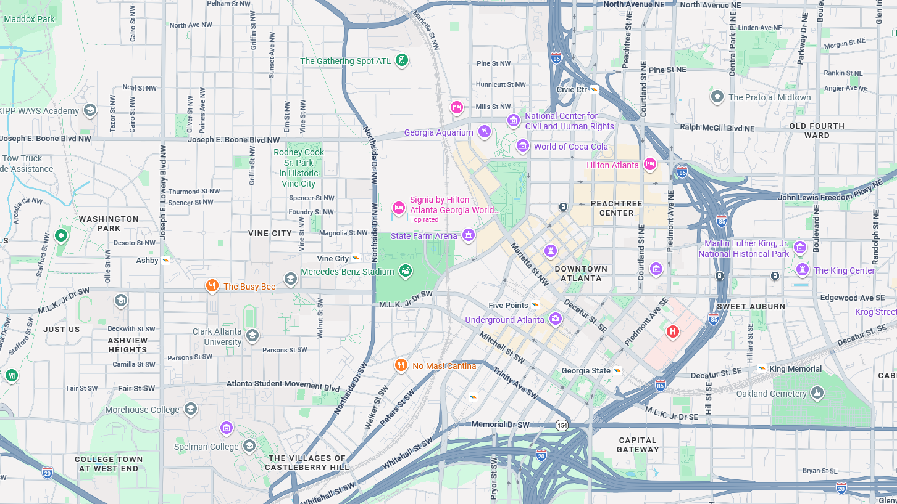

Two audiences... with overlap.
Discover Atlanta, (Atlanta Convention & Visitors Bureau, or ACVB) markets the city to two audiences who arrive through different entry points and sometimes turn out to be the same person.
A destination marketing site was asking every visitor to sort themselves.
The copy was fine. But who was it for? We needed to know before the reader arrived.
The drive market and the fly market
People choosing where to spend a weekend.
Planners scouting a host city
Evaluating venues for a conference that is still two years out.
Two businesses sharing one domain, funded through different mechanisms: hotel occupancy tax on one side, dues from member attractions and restaurants on the other.

A planner tours the city once, then hears from us for years.
They have no use for this weekend's event list after they go back home. Except that the weekend list is the clearest picture of what the city actually feels like when it is full of people.
Downtown and the convention district. Map data © Google.
Both audiences, one website.
- Both arrive at the same domain through different doors.
- Each receives material written for the other on the site and social.
- What do you do with content spillover?
Before 8 and after 5, a convention attendee is a tourist.
Research showed attendees extending their stay to add leisure plans, sometimes bringing family. A meeting planner has leisure needs of their own.
The answer wasn't more content. It was mapping realistic paths.
The Core Model
Find the pages where a reader's task and the business goal overlap, then build inward and outward from those.
View on Content Strategy LibraryBrand Voice + Tone Guide
One defined personality, with rules for how it flexes by context, channel, and reader.
View on Content Strategy LibraryThe useful question isn't what a page should say. It's which pages are the ones where a reader's task and the organization's goal actually overlap, and what leads into and out of them.
Worksheet after Ida Aalen's core model, first published in A List Apart. The entries above are an illustrative example, not a project artifact.
One personality, with the register set by context.
- Strictly defined, but never stiff.
- Welcoming, in the know, slangy.
- Confident and credible enough for a planner evaluating a city for a national conference.
Examples drafted to illustrate the standard. Photo: Midtown skyline from Lake Clara Meer, Piedmont Park, by Daniel Mayer, CC BY-SA 2.5, via Wikimedia Commons.
Weekly review creating editorial action items.
As the one driving the weekly connect and responsible for what happened afterward, I converted the week's signal into new, updated, refreshed, and repurposed content items.
Photo: Overhead documentation by Gerd Altmann, via Pixabay.
What I'd do differently today
I was thinking in audiences, but audiences are demographic. “Jobs-to-be-done” are situational, and situation accounts for behavior.

They were already serving their own needs.
The convention audience isn't a separate segment to address separately. It's a leisure audience with a business reason to be in town and a narrower window in which to enjoy it. The right content and proper traffic analysis interpreted that.
Still from “Atlanta Makes Travel A Breeze — International Tourism”, Discover Atlanta on YouTube.